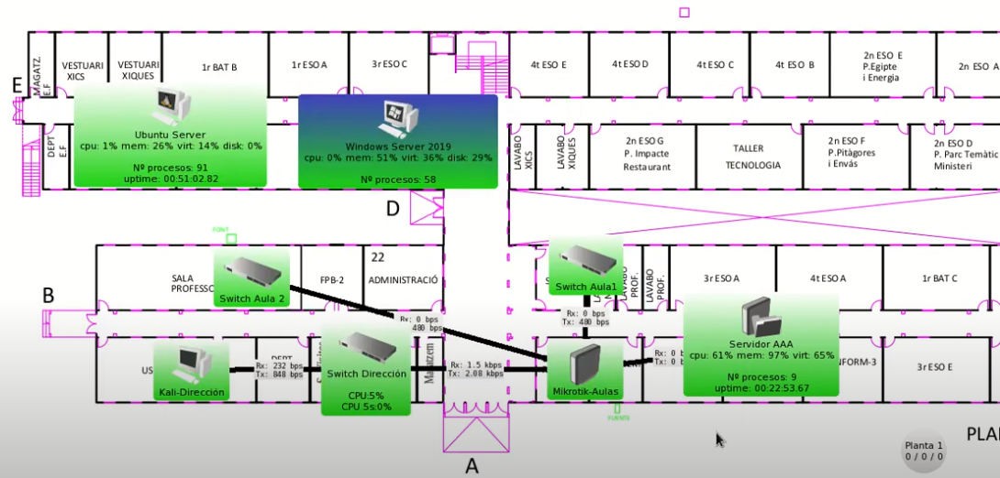
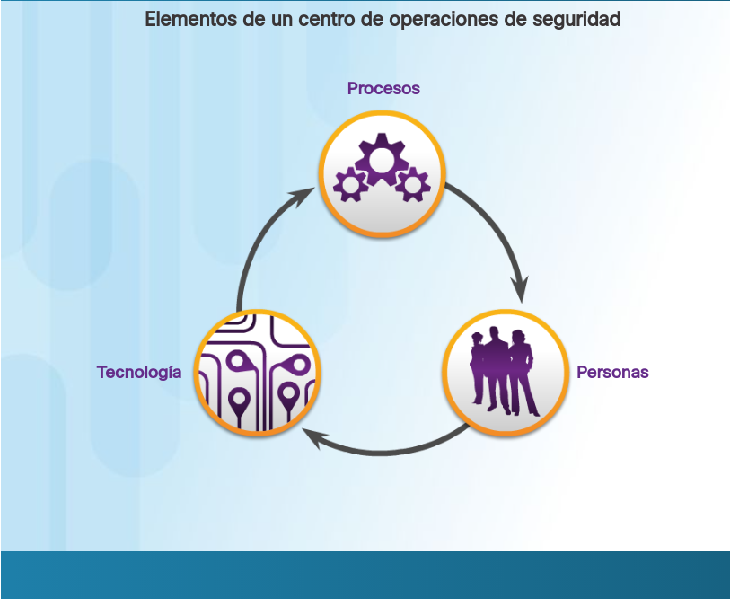
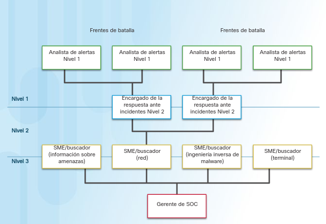
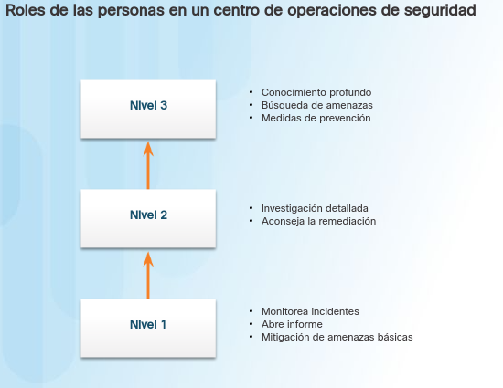
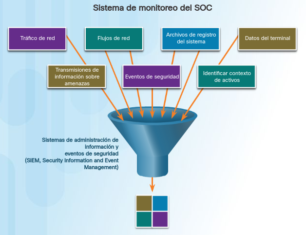
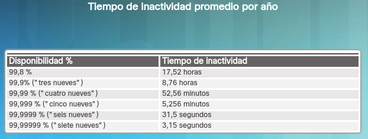
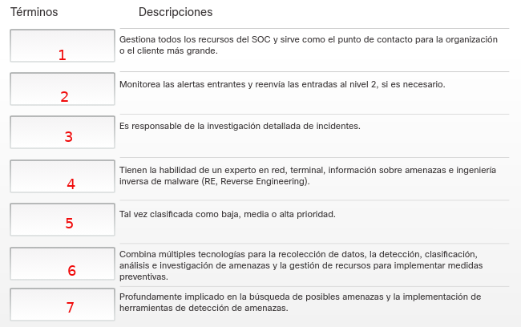
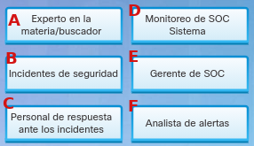

Tarea 4. El centro de operaciones de seguridad moderno (SOC)
1. El centro de operaciones de seguridad moderno (SOC)
Un centro de operaciones de seguridad (SOC), a veces denominado centro de operaciones de seguridad de la información o ISOC, es un equipo interno o externo de profesionales de seguridad de TI que supervisa toda la infraestructura tecnológica de una organización, las 24 horas del día, los 7 días de la semana, para detectar eventos de ciberseguridad en tiempo real y abordarlos de la forma más rápida y eficaz posible.

Figura 1. Monitorización 24x7 - Dude Mikrotik.
Como ejemplo, en el siguiente vídeo podemos observar el proceso de monitorización y envío de alarmas en una red de un centro educativo.
Vídeo 1. Ejemplo de monitorización de equipos y envío de alarmas.
Un SOC también selecciona, opera y mantiene la tecnología de seguridad cibernética y analiza continuamente los datos de las amenazas para encontrar formas de mejorar la seguridad de la organización.
El principal beneficio de operar o subcontratar un SOC es que unifica y coordina las herramientas, las prácticas y la respuesta de seguridad de una organización a los incidentes de seguridad. Esto generalmente da como resultado mejores medidas preventivas y políticas de seguridad, una detección de amenazas más rápida y una respuesta más rápida, más efectiva y más rentable a las amenazas de seguridad. Un SOC también puede mejorar la confianza del cliente y simplificar y fortalecer el cumplimiento de una organización con las regulaciones de privacidad de la industria, nacionales y globales. Fuente.
2. Elementos de un SOC
|  |
La defensa contra las amenazas actuales requiere un enfoque formalizado, estructurado y disciplinado a cargo de profesionales de centros de operaciones de seguridad. Los SOC proporcionan una amplia gama de servicios, que abarcan desde el seguimiento y la gestión hasta soluciones completas contra amenazas y seguridad alojada que se pueden personalizar para satisfacer las necesidades del cliente. Los SOC pueden ser totalmente internos (una empresa puede ser propietaria e implementarlos) o es posible tercerizar los elementos de un SOC a proveedores de seguridad, como los Servicios de seguridad administrados de Cisco. Los elementos principales de un SOC (que aparecen en la figura) son las personas, los procesos y la tecnología. |
1. Las personas en el SOC
|  |
SANS Institute (www.sans.org) divide en cuatro los roles de la gente en los SOC:
En este curso, se ofrece la preparación para una certificación adecuada para el puesto de analista de alertas de categoría 1, también conocido como analista de ciberseguridad. La figura del SANS Institute representa gráficamente cómo interactúan entre sí estos roles. |
2. Los procesos en el SOC
|  |
El día de un analista de categoría 1 comienza con la monitorización de colas de alertas de seguridad. Con frecuencia, se utiliza un sistema de informes que les permite a los analistas seleccionar alertas de una cola para investigar. Dado que el software que genera alertas puede activar falsas alarmas, una de las tareas del analista de categoría 1 puede ser verificar que una alerta sea realmente un incidente de seguridad. Cuando se establece la verificación, es posible reenviar el incidente a investigadores u otro personal de seguridad para que tomen medidas, o categorizarlo como resuelto si es una falsa alarma. Si un informe no se puede resolver, el analista de categoría 1 reenviará el informe a un analista de categoría 2 para que lo investigue en detalle e implemente una solución. Si el analista de categoría 2 no puede resolver el informe, se lo reenviará a un analista de categoría 3 con conocimiento experto y habilidades de búsqueda de amenazas. |
3. Las tecnologías en el SOC
|  |
Como se muestra en la figura, un SOC necesita un sistema de administración de información y eventos de seguridad (SIEM) o equivalente. Este sistema combina datos de varias tecnologías. Los sistemas SIEM se usan para recopilar y filtrar datos; detectar, clasificar, analizar e investigar amenazas; y administrar recursos a fin de implementar medidas preventivas y afrontar futuras amenazas. Las tecnologías del SOC incluyen una o más de las siguientes:
|
3. Seguridad empresarial y administrada
|
Para redes medianas y grandes, la organización se beneficiará de implementar un SOC de nivel empresarial. El SOC puede ser una solución interna completa. Sin embargo, muchas organizaciones importantes tercerizan, al menos en parte, las operaciones del SOC a un proveedor de soluciones de seguridad. Cisco cuenta con un equipo de expertos que ayudan a garantizar la resolución oportuna y precisa de incidentes. Cisco ofrece una amplia gama de capacidades de respuesta, preparación y administración de incidentes:
|
3.1 Comparación entre seguridad y disponibilidad
|  | La mayoría de las redes empresariales tienen que estar funcionando en todo momento. El personal de seguridad entiende que, para que la organización logre sus prioridades, debe mantenerse la disponibilidad de la red. Cada empresa o industria tiene una tolerancia limitada al tiempo de inactividad de la red. Esa tolerancia suele basarse en una comparación entre el costo del tiempo de inactividad y el costo de protección contra el tiempo de inactividad. Por ejemplo, en un comercio minorista pequeño con una sola ubicación, puede resultar suficiente que un router sea el único punto de falla. Sin embargo, si gran parte de las ventas de ese comercio proviene de compradores en línea, el propietario puede decidir brindar determinado nivel de redundancia para asegurar que siempre haya disponible una conexión. El tiempo de actividad preferido suele medirse según la cantidad de minutos de inactividad en un año, como se ve en la figura. Entre los ejemplos, un tiempo de actividad de “cinco nueves” indica que la red está activa el 99,999 % del tiempo, es decir, permanece inactiva menos de 5 minutos por año. “Cuatro nueves” equivale a un tiempo de inactividad de 53 minutos por año. Sin embargo, el nivel de seguridad no debe ser tan alto como para interferir en las necesidades de los empleados o las funciones empresariales. El secreto es lograr siempre un equilibrio entre un buen nivel de seguridad y la posibilidad de que la empresa funcione con eficacia. |
4. Trabajo a realizar
Une cada término del SOC con su descripción correspondiente.
|  |  |
Para tu subsistema del proyecto asignado, realiza un diseño breve del SOC que implementarías.
5. Entregar
Sube al aula virtual un documento pdf con la solución que propones.
Obra publicada con Licencia Creative Commons Reconocimiento No comercial Compartir igual 4.0